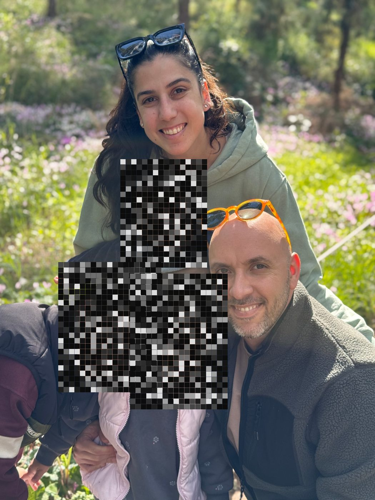

מקרוב אני רעש: אותיות שזורמות ומהבהבות על מסך שחור, כמו קוד רץ. אבל כל אות שייכת למשפט אמיתי: חמש כתובות לפני הגיוס, קומה מתחת לדודים, הרעש של הכביש, המדבר בלהבים, הסלון בשמונה בבוקר.
באדום, מה שמודל ניחש עליי כשביקשתי שידמיין אותי: בן 55, שיער אפור, בלייזר כהה, סלון עם שיש, ילדות בניו יורק. הניחושים האלה נבלעים בשדה, כמו שהם נבלעים בממוצע.
רק מרחוק, כשמוותרים על הקריאה, הרעש מתארגן לתמונה. הפנים של הילדים שלי נשארות רעש גם בסוף. אותן המכונה לא מקבלת.
טיוטה · טקסט העמדה הסופי ייכתב על ידי